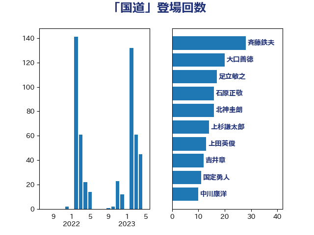

単語「国道」

| 大口善徳 | 公明党 | 44 回 |
| 稲津久 | 公明党 | 22 回 |
| 足立敏之 | 自由民主党 | 17 回 |
| 石原正敬 | 自由民主党 | 13 回 |
| 赤羽一嘉 | 公明党 | 12 回 |
| 国定勇人 | 自由民主党 | 11 回 |
| 斉藤鉄夫 | 公明党 | 11 回 |
| 城井崇 | 立憲民主党 | 10 回 |
| 日下正喜 | 公明党 | 9 回 |
| 中野英幸 | 自由民主党 | 8 回 |
| 木村次郎 | 自由民主党 | 8 回 |
| 田嶋要 | 立憲民主党 | 8 回 |
| 今枝宗一郎 | 自由民主党 | 7 回 |
| 市村浩一郎 | 日本維新の会 | 6 回 |
| 平口洋 | 自由民主党 | 6 回 |
| 高橋千鶴子 | 日本共産党 | 6 回 |
| 緑川貴士 | 立憲民主党 | 5 回 |
| 酒井庸行 | 自由民主党 | 5 回 |
| 北神圭朗 | 無所属 | 4 回 |
| 小山展弘 | 立憲民主党 | 4 回 |
| 尾崎正直 | 自由民主党 | 4 回 |
| 浅野哲 | 国民民主党 | 4 回 |
| 西田実仁 | 公明党 | 4 回 |
| 大西健介 | 立憲民主党 | 3 回 |
| 室井邦彦 | 日本維新の会 | 3 回 |
| 本庄知史 | 立憲民主党 | 3 回 |
| 福田昭夫 | 立憲民主党 | 3 回 |
| 赤嶺政賢 | 日本共産党 | 3 回 |
| 逢坂誠二 | 立憲民主党 | 3 回 |
| 上杉謙太郎 | 自由民主党 | 2 回 |
| 二階俊博 | 自由民主党 | 2 回 |
| 井上信治 | 自由民主党 | 2 回 |
| 岩渕友 | 日本共産党 | 2 回 |
| 杉久武 | 公明党 | 2 回 |
| 杉本和巳 | 日本維新の会 | 2 回 |
| 枝野幸男 | 立憲民主党 | 2 回 |
| 根本幸典 | 自由民主党 | 2 回 |
| 森屋隆 | 立憲民主党 | 2 回 |
| 櫻田義孝 | 自由民主党 | 2 回 |
| 武井俊輔 | 自由民主党 | 2 回 |
| 深澤陽一 | 自由民主党 | 2 回 |
| 渡辺猛之 | 自由民主党 | 2 回 |
| 滝波宏文 | 自由民主党 | 2 回 |
| 福島伸享 | 無所属 | 2 回 |
| 簗和生 | 自由民主党 | 2 回 |
| 紙智子 | 日本共産党 | 2 回 |
| 芳賀道也 | 国民民主党 | 2 回 |
| 豊田俊郎 | 自由民主党 | 2 回 |
| 近藤和也 | 立憲民主党 | 2 回 |
| 金城泰邦 | 公明党 | 2 回 |
| 青山大人 | 立憲民主党 | 2 回 |
| 馬場成志 | 自由民主党 | 2 回 |
| 三浦信祐 | 公明党 | 1 回 |
| 住吉寛紀 | 日本維新の会 | 1 回 |
| 吉川赳 | 無所属 | 1 回 |
| 國重徹 | 公明党 | 1 回 |
| 大串博志 | 立憲民主党 | 1 回 |
| 小宮山泰子 | 立憲民主党 | 1 回 |
| 小熊慎司 | 立憲民主党 | 1 回 |
| 山下芳生 | 日本共産党 | 1 回 |
| 岸信夫 | 自由民主党 | 1 回 |
| 松野博一 | 自由民主党 | 1 回 |
| 渡辺周 | 立憲民主党 | 1 回 |
| 神津たけし | 立憲民主党 | 1 回 |
| 竹内真二 | 公明党 | 1 回 |
| 若松謙維 | 公明党 | 1 回 |
| 菅家一郎 | 自由民主党 | 1 回 |
| 菅義偉 | 自由民主党 | 1 回 |
| 菊田真紀子 | 立憲民主党 | 1 回 |
| 西田昭二 | 自由民主党 | 1 回 |
| 鈴木憲和 | 自由民主党 | 1 回 |
| 高見康裕 | 自由民主党 | 1 回 |
| 高野光二郎 | 自由民主党 | 1 回 |
| 麻生太郎 | 自由民主党 | 1 回 |